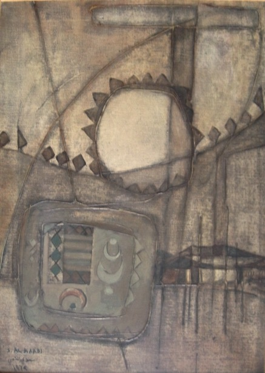

Saadi Al-Kaabi
B. 1937
Artist Biography
Employing an expressive yet stylised approach, Saadi Al Kaabi’s paintings draw from the rich and diverse reservoir of Iraqi art and heritage. Marrying aesthetic influences from Cubism with those from Sumerian, Assyrian, Babylonian and Islamic art, Al Kaabi’s work explores the nuances and contradictions of the human condition. Born in Najaf, Al Kaabi is a significant member of Iraq’s second generation of modernist artists. A graduate of Baghdad’s Institute of Fine Arts in 1960, the artist’s signature style emerged in the 1970s after two decades of involvement in the avant-garde modern art scene. Al Kaabi applies thick layers of paint in his contemporary art, using ginger earth tones to compose highly textured works. His practice forms part of a broader post-independence artistic approach in the Arab world concerned with fashioning a new national identity that involved looking to the past in search of cultural authenticity.Al Kaabi has participated in numerous international exhibitions, including the 1976 Venice Biennale. He won golden prizes at the Kuwaiti biennale in 1981 and the Dacca biennale in 1986 and his paintings are in public collections at the Arab Museum of Modern Art, Doha, Museum of Modern Art, Baghdad and Jordan National Gallery of Fine Arts, Amman as well as in New Delhi, Prague, Lisbon and Stockholm.

Tahreer, 1974